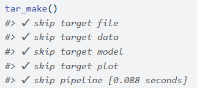
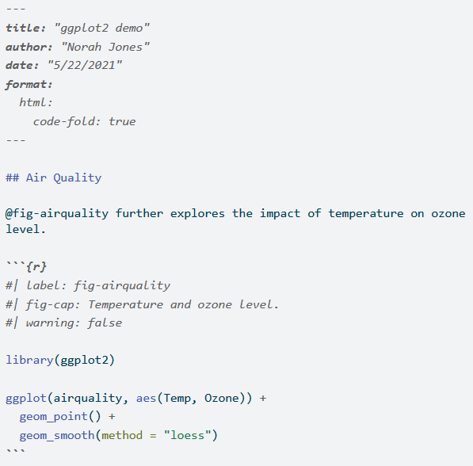

Bonnes pratiques pour les projets statistiques
Formation à la DESE
Invalid Date
Introduction
La notion de bonnes pratiques
- Origine : communauté des développeurs logiciels
- Constats :
- le “code est plus souvent lu qu’écrit” (Guido Van Rossum)
- la maintenance d’un code est très coûteuse
- Conséquence : un ensemble de règles informelles, conventionnellement acceptées comme produisant des logiciels fiables, évolutifs et maintenables
Pourquoi s’intéresser aux bonnes pratiques ?
L’activité du statisticien / datascientist tend à se rapprocher de celle du développeur :
- projets intenses en code
- projets collaboratifs et de grande envergure
- complexification des données et donc des infrastructures
- déploiement d’applications pour valoriser les analyses
Bonnes pratiques et reproductibilité

Source : Peng R., Reproducible Research in Computational Science, Science (2011)
- Une reproductibilité parfaite est coûteuse
Gitest un standard atteignable et efficient
Note
Quel socle de bonnes pratiques pour les projets statistiques en R ?
Plan de la formation
Améliorations graduelles dans l’échelle de la reproductibilité :
1️⃣ Qualité du code
2️⃣ Structure des projets
3️⃣ Formats de données
4️⃣ Environnements reproductibles
5️⃣ Pipelines de données
6️⃣ Publication reproductible
Exercice 0
Préparation de l’environnement de travail
- Créer un nouveau dépôt public sur GitHub
- Lancer un service
RStudiosur le Datalab - Utiliser un
terminalpour activer le stockage des identifiants :git config --global credential.helper store
- Cloner le dépôt distant sur votre environnement local (
Datalab):File→New project→Version Control→Git
- Créer le script
script.Rdans votre dépôt en copiant le contenu du fichier qui se trouve ici - Créer un script
write_csv.Ren copiant le contenu de celui se trouvant ici, puis l’exécuter. Il récupére des données et en écrit un échantillon sur lequel nous allons travailler - Ajouter “individu_reg.*” au fichier
.gitignore - commit/push les changements
I- Qualité du code
Enjeux
- D’une vision utilitariste du code à une vision du code comme outil de communication
- Favoriser la lisibilité et la maintenabilité
- Faciliter la réutilisation
- Assurer la transparence méthodologique
Principes généraux
- Adopter les standards communautaires
- Utiliser des fonctions
- Documenter son code
- Indiquer les packages utilisés afin d’éviter les conflits
1️⃣ Adopter les standards communautaires
“Good coding style is like correct punctuation: you can manage without it, butitsuremakesthingseasiertoread”
- Respecter les conventions du langage dans lequel il est rédigé
- Il existe un guide de référence pour bien coder en
R: le Tidyverse style guide.
1️⃣ Adopter les standards communautaires
Deux outils pratiques aident à respecter les standards :
- linter: programme qui vérifie que le code est formellement conforme à un certain guidestyle
- signale problèmes formels, sans corriger
- formatter: programme qui reformate un code pour le rendre conforme à un certain guidestyle
- modifie directement le code
Tip
- Exemples d’erreurs repérées par un linter :
- lignes de code trop longues ou mal indentées, parenthèses non équilibrées, noms de fonctions mal construits…
- Exemples d’erreurs non repérées par un linter :
- fonctions mal utilisées, arguments mal spécifiés, structure du code incohérente, code insuffisamment documenté…
1️⃣ Adopter les standards communautaires
Dans le cas de :
2️⃣ Utiliser des fonctions
Règle d’or
Il faut utiliser une fonction dès qu’on utilise une même portion de code plus de deux fois (don’t repeat yourself (DRY))
- Limite les risques d’erreurs liés aux copier/coller
- Rend le code plus lisible et plus compact
- Un seul endroit du code à modifier lorsqu’on souhaite modifier le traitement
- Facilite la réutilisation et la documentation du code !
Règles pour écrire des fonctions pertinentes
- Une tâche = une fonction ;
- Une tâche complexe = un enchaînement de fonctions réalisant chacune une tâche simple ;
- Limiter l’utilisation de variables globales.
3️⃣ Documenter son code
- Grands principes :
- Documenter le pourquoi plutôt que le comment ;
- Privilégier auto-documentation via des nommages pertinents.
Comment bien documenter un script ?
- Minimum üö¶ : commentaire au d√©but du script pour d√©crire ce qu‚Äôil fait ;
- Bien üëç : commenter les parties ‚Äúd√©licates‚Äù du code ;
- Id√©al üí™ : documenter ses fonctions avec la syntaxe
roxygen2.
4️⃣ Pas d’ambiguité sur les packages utilisés
- Deux fonctions peuvent avoir le même nom dans des packages différents
Rutilise par défaut la librairie chargée le plus récemment
- Erreurs difficiles à repérer car il est nécessaire d’exécuter le code
- Recommandation : indiquer explicitement le package : notation
package::fonction()- Exemple
dplyr::filter()
- Exemple
Exemple
package1etpackage2contiennent chacun une fonction appeléesuperFonction.- Si
package2est chargé aprèspackage1, alorssuperFonctiondésigne par défaut la fonction depackage2. - Mieux vaut noter
package1::superFonctionetpackage2::superFonction
Ressources supplémentaires
- R Packages par Hadley Wickham and Jenny Bryan
- Une présentation très bien faite
- Un cours complet sur la reproductibilité avec
R - L’équivalent
Pythonen 3A d’ENSAE
Exercice 1
Exercice 1
Partie 2: premiers standards de qualité
- Utiliser l’addin de
lintrpour diagnostiquer le scriptscript.R(Addins > Lint current file).- Regardez bien la liste des problèmes détectés par le linter.
- Comprenez-vous la nature des problèmes?
- Utiliser l’addin de
stylerpour nettoyer le fichier (Addins > Style active file).- Que se passe-t-il d’inattendu? Comprenez-vous le problème?
- Lorsque vous avez trouvé le problème, vous pouvez le corriger puis faire un commit.
- Utiliser à nouveau l’addin de
stylerpour nettoyer le fichier.- Enregistrer et faire un commit du fichier.
- Prenez le temps de regarder le diff du commit. Comprenez-vous les modifications faites par le formatter?
Exercice 1
Application des standards de qualité de code (suite)
- Refaire tourner le linter. Il reste encore un certain nombre d’erreurs de formattage, car
stylerest un formatter peu intrusif. - On va maintenant configurer le linter pour qu’il propose une analyse beaucoup plus rigoureuse. Pour cela, exécuter le code suivant.
linters_complets <- c("best_practices", "common_mistakes", "correctness", "efficiency", "readability", "style")
lintr::lint("script.R", linters = lintr::linters_with_tags(linters_complets))- Regarder la liste des problèmes repérés par le linter, et la comparer avec celle de l’étape précédente.
- Comprenez-vous les nouveaux problèmes repérés par le linter?
- Comprenez-vous les nouveaux problèmes repérés par le linter?
II- Structure des projets
Enjeux
- Favoriser la lisibilité et la maintenabilité
2 Construire des projets reproductibles
⚠️ A ne pas reproduire chez vous
├── report.Rmd
├── correlation.png
├── data.csv
├── data2.csv
├── fig1.png
├── figure 2 (copy).png
├── report.pdf
├── partial data.csv
├── script.R
└── script_final.RSource : eliocamp.github.io
Principes généraux
- Utiliser les projets RStudio
- Organiser son projet en sous-dossiers
- Donner des noms pertinents aux fichiers
- Documenter son projet
1️⃣ Utiliser les projets RStudio
- Objectif : favoriser la reproductibilité
- Tous les fichiers nécessaires au projet dans un même dossier ;
- Le dossier contenant le projet RStudio est automatiquement utilisé comme working directory ;
- Utilisation de chemins relatifs plutôt qu’absolus.
- Bonus : en utilisant
Git, on s’assure de toujours travailler dans un projet RStudio !
2️⃣ Organiser son projet en sous-dossiers
- Objectif : adopter une structure arbitraire, mais lisible et cohérente
├── data
│ ├── raw
│ │ ├── data.csv
│ │ └── data2.csv
│ └── derived
│ └── partial data.csv
├── scripts
│ └── script.R
├── analysis
│ ├── script_final.R
│ └── report.Rmd
└── output
├── fig1.png
├── figure 2 (copy).png
├── figure10.png
├── correlation.png
└── report.pdf3️⃣ Donner des noms pertinents aux fichiers
- Objectif : auto-documenter son projet
├── data
│ ├── raw
│ │ ├── dpe_logement_202103.csv
│ │ └── dpe_logement_202003.csv
│ └── derived
│ └── dpe_logement_merged_preprocessed.csv
├── scripts
│ └── preprocessing.R
├── analysis
│ ├── generate_plots.R
│ └── report.Rmd
└── output
├── histogram_energy_diagnostic.png
├── barplot_consumption_pcs.png
├── correlation_matrix.png
└── report.pdf4️⃣ Documenter son projet
- Le fichier
README.md, situé à la racine du projet, est à la fois la carte d’identité et la vitrine du projet
- Idéalement, il contient :
- Une présentation du contexte et des objectifs
- Une description de son fonctionnement
- Un guide de contribution (open-source)
- Quelques modèles de
README.mdcomplets :
Ressources supplémentaires
- La documentation utilitR
- eliocamp.github.io
Exercice 2 (1/5)
Cette application vise à résoudre une partie des problèmes détectés précédemment.
Travail sur le fichier: modifications de structure
- Créer des parties dans
script.Rpour aider à la compréhension de la structure du fichier:# TITRE NIVEAU 1 ------------et# TITRE NIVEAU 2 ==========- Faire un commit
- Déplacer les
librarypour les mettre tous ensemble au début du script.- Conserver l’ordre des packages (
MASSaprèstidyversenotamment). - Faire un commit.
- Conserver l’ordre des packages (
- Le script n’est pas construit dans un ordre logique. Déplacer les parties pour adopter une structure plus logique:
- Gestion de l’environnement -> Définition de fonctions -> Import des donnees -> Retraitement des données -> Statistiques descriptives -> Graphiques -> Modélisation
- Faire un commit.
Exercice 2 (2/5)
On va se pencher sur chaque partie du code maintenant qu’on y voit plus clair:
Modifications de la partie import des données
- Faire tourner le code jusqu’à l’import des données. Regarder les données.
- Quel problème repérez-vous?
- Corriger le problème en vous aidant de la documentation de
read_csv2.
- Faire tourner le code qui définit la table
df2.- Corriger le problème et faire un commit.
Exercice 2 (3/5)
On se penche maintenant sur la partie retraitement des données :
Modifications de la partie restructuration des données
- Exécuter la partie de gestion des valeurs manquantes, remarquer des problèmes en regardant code et données.
- Utiliser les fonctions
dplyr::mutate,dplyr::na_ifetdplyr::acrosspour simplifier le code. - Faire un commit
- Utiliser les fonctions
- S’occuper de la partie gestion des variables catégorielles.
- Repérer des problèmes en regardant les données et les corriger.
- Faire un commit
- Changer le type de la variable
agedafin d’éviter les nombreuxas.numeric(aged)ultérieurs.- Remplacer toutes les occurrences de
as.numeric(aged).
- Remplacer toutes les occurrences de
Exercice 2 (4/5)
- On passe maintenant à la partie statistiques descriptives.
- Après chaque question, faire un commit
Modifications de la partie statistiques descriptives
- Corriger les erreurs sur le décompte des professions.
- Exécuter le code produisant les statistiques d’âge jusqu’à rencontrer l’erreur
Error in select(., aged) : unused argument (aged).- Comment la résoudre ?
- Récupérer les données utilisées lors de la production de
ggplot(.); - Remplacer le second
summarisepar la bonne commande dans la partie#part d'homme dans chaque cohorte; - Débugger la partie
#stats surf par statutpuis produire un graphique lisible ; - Comprendre les erreurs dans la partie où on applique
fonction_de_stat_agregeeet les corriger.
Exercice 2 (5/5)
Modifications de la partie modélisation et gestion des secrets
- Régler les problèmes de la partie modélisation ;
- Traiter correctement les informations confidentielles (secrets) :
- Repérer le jeton d’API dans le code. Retirer le jeton d’API du code et créer un fichier YAML nommé
secrets.yamloù vous écrivez ce secret sous la formekey: value. - Dans
script.R, importer ce YAML (avecyaml::read_yaml("secrets.yaml") pour créer une variableapi_tokenayant cette valeur. - Ajouter dans
.gitignorele fichiersecrets.yamlet indiquer dans leREADME.mdde votre projet que les secrets sont stockés dans ce fichier. - ⚠️ Attention : il ne faut pas committer
secrets.yamlcar le jeton d’API est personnel et secret!
Bilan de l’exercice
- Un code mal structuré
- Limite la lisibilité du projet
- Est très coûteux à maintenir (dette technique)

Checkpoint
- Des dizaines de
script.Rdifférents peuvent être considérés valides à ce stade
- Si vous avez eu des difficultés avec une des questions, vous pouvez repartir de cette version
- L’idéal est néanmoins que vous continuiez avec votre version
Exercice 3: modularisation (1/2)
Améliorer la fonction fonction_de_stat_agregee
- Lui donner un nom plus court.
- Remplacer la première partie par un
match.arg. - Remplacer la deuxième partie par
switch. - S’assurer qu’elle soit pure, c’est-à-dire qu’elle n’utilise pas de variables globales.
- Compter les erreurs de code que vous venez de corriger.
- Limiter la duplication de code en utilisant des fonctions et, quand c’est pertinent, en utilisant
lapplypour les appliquer en série.
Exercice 3: modularisation (2/2)
Améliorer la fonction fonction_de_stat_agregee (suite)
- Déplacer toutes les fonctions dans un fichier
R/functions.R. - Dans
script.R, appeler en début de chaîne ces fonctions avecsource("R/functions.R", encoding = "UTF-8"). - Documenter la fonction en utilisant
roxygen2. - Redémarrer la session (en faisant
Session > Restart R). Si tout va bien, le code devrait maintenant fonctionner.
Checkpoint
III- Formats de données
Enjeux
- Le choix d’un format de données répond à un arbitrage entre plusieurs critères :
- Finalité (traitement, analyse, diffusion)
- Public cible
- Volumétrie
Recommandations
- Eviter impérativement les formats de données adhérents à un langage (
RDS,RData,fst,sas7bdat, etc.).
- Deux formats à privilégier :
- CSV : pour la plupart des usages courants
- Avantage: non-compressé donc facilement lisible
- Inconvénients : pas de gestion des méta-données, peu adapté aux données volumineuses
- Parquet : pour le traitement de données volumineuses
- Compressé et très performant en lecture/écriture
- Gestion native des méta-données
- CSV : pour la plupart des usages courants
Exercice 4
Manipulation des formats CSV et Parquet
- Effacer la base
individu_reg.csv; - Transformer le script
write_csv.Rpour n’utiliser que le formatparquet; sauvegarder la tableindividu_regen format Parquet ; - Modifier la phase d’import de
script.Rpour utiliserarrowet lire le fichier Parquet créé précédemment.
IV- Environnements reproductibles
Expérience de pensée
- Imaginons la situation suivante :
- J’installe une version de
Rsur mon poste ; - Je développe un projet en installant les packages nécessaires ;
- Une fois terminé, je passe au projet suivant, et ainsi de suite.
- J’installe une version de
- Quels problèmes puis-je rencontrer au fil des projets ?
- Est-il facile de partager un de mes projets ?
Enjeux
- Version de R fixe, celle de l’installation système
- Conflits de version : différents projets peuvent requérir différentes versions d’un même package.
- Reproductibilité limitée : difficile de dire quel projet nécessite quel package.
- Portabilité limitée : difficile de préciser dans un fichier les dépendances spécifiques à un projet.
Exercice 5A
Création du fichier Description
- Utiliser
usethis::use_description(check_name = FALSE)pour créer le modèle de fichierDescription. Un nouveau fichier apparaît dans le dossier RStudio. Faire un commit. - Taper
usethis::use_package("ggplot2")dans la commande et observer le changement dans ce fichierDescription. Faire un commit. - Taper
usethis::use_package("tidyverse")et observer le message.
Exercice 5A
Modifications du fichier Description
- On va suivre le conseil des développeurs de
tidyverse:- il vaut mieux retirer
tidyversedes dépendances de notre code et plutôt lister uniquement les packages qu’on utilise.
- il vaut mieux retirer
- Retourner dans
script.R. Repartir d’un environnement vide (en relançantR) et supprimer la lignelibrary(tidyverse) - Exécuter les lignes l’une après l’autre. S’il y a une erreur, vérifier la fonction responsable et son package associé.
- Vérifier que le code tourne toujours.
- Une fois que la liste est stabilisée faire
lapply(c("package1", "package2"...), usethis::use_package)pour les ajouter au fichierDescription.
Exercice 5A
Utilisation du fichier Description
- Retirer les
install.packagesau début descript.R. - Si vous ne l’avez pas déjà fait, retirer
rm(list = ls()). - En option, vous pouvez compléter les autres champs de votre
Description. - Committer et pusher les fichiers modifiés.
- Créer un nouveau service RStudio, comme dans l’exercice 0.
- Cloner le dépôt, comme dans l’exercice 0.
- Installer les dépendances du projet avec
devtools::install_deps(upgrade = "never"). - Tester
write_csv.Rpuisscript.R. Tout doit fonctionner (normalement…).
Une solution plus complète : renv
renvpermet de créer des environnements reproductibles
- Isolation : chaque projet dispose de sa propre librairie de packages
- Reproductibilité :
renvenregistre les versions exactes des packages nécessaires au projet
- Portabilité: un tiers peut exécuter le projet avec les mêmes spécifications
Utilisation de renv
- Initialisation (
init) de l’environnement local du projet
- Développement du projet
- Enregistrement (
snapshot) des versions des packages installés
- Restauration (
restore) d’un environnement
1️⃣ Initialisation de l’environnement
renv::init()dans un projet RStudio crée :- Un dossier
renvet le fichier.Rprofile: activation automatique de l’environnement - Le fichier
renv.lock: versions des packages installés
- Un dossier

2️⃣ Développement du projet
- Une fois l’environnement initialisé, on développe le projet de manière habituelle
- Installations/suppressions/mises à jour de packages
- Ecriture de scripts
renv::status(): indique les packages installés/supprimés par rapport au fichierrenv.lock
3️⃣ Enregistrement de l’environnement
renv::snapshot(): enregistre les versions des packages installés dans le fichierrenv.lock

4️⃣ Restauration de l’environnement
renv::restore(): installe/désinstalle les packages nécessaires pour arriver à l’état spécifié dans le fichierrenv.lock
- Portabilité : un tiers peut recréer un environnement avec les mêmes spécifications
Exercice 5B
Prise en main de la librairie renv
Taper dans la console
renv::init(), lire le message et accepter.Observer le dossier
renvqui apparaît.Installer le package
gtet observer le message dans la console.Dans la partie sur les statistiques descriptives d’âge, ajouter ce code :
stats_age <- df2 |> group_by(decennie = decennie_a_partir_annee(age)) |> summarise(n()) table_age <- gt(stats_age) |> tab_header( title = "Distribution des âges dans notre population" ) |> fmt_number( columns = `n()`, sep_mark = " ", decimals = 0 ) |> cols_label( decennie = "Tranche d'âge", `n()` = "Population" )
Exercice 5B
Prise en main de la librairie renv (suite)
- Dans la console, faire
renv::snapshot()et observer le message. - Faire un commit et un push des fichiers
script.R,.Rprofile,renv.locket du dossierrenv/. Push. - Ouvrir un nouveau service
RStudiosur leSSPCloudet cloner le projet dans les mêmes conditions que l’exercice 0. Regarder les messages dans la console. - Exécuter
renv::status()dans la console. Constater que les packages ne sont pas installés parrenv, car c’est à l’utilisateur de décider de le faire. Fairerenv::install(). Par défaut,renvinstalle les dépendances manuellement ajoutées dansDESCRIPTION. - Refaire un
renv::status(). Les dépendances manquantes doivent être ajoutées auDESCRIPTIONavecusethis::use_package. - Refaire
renv::install().
Vers une reproductibilité optimale
- Limites des environnements virtuels :
- Les librairies système ne sont pas gérées
- Lourdeur de la phase d’installation à chaque changement d’environnement
- Peu adaptés à un environnement de production
- La conteneurisation (ex :
Docker) apporte la solution
- Intuition : au lieu de distribuer la recette pour recréer l’environnement, distribuer directement une “machine” qui contient tout l’environnement nécessaire au projet
Ressources supplémentaires
V- Pipelines de données
Motivations
- Une analyse de données ou une chaîne de production font intervenir des étapes standardisées
- Modéliser ces étapes sous forme de pipeline (direct acyclic graph) a plusieurs avantages :
- Découplage des différentes étapes
- Facilite la planification du traitement
- Facilite la prise en main du projet par un tiers
targets
targetsest un framework de modélisation de pipelines spécifiquement dédié aux projetsR.
- Deux objectifs majeurs :
- Réduire le coût d’expérimentation en sauvegardant les résultats intermédiaires (targets)
- Garantir la reproductibilité de la chaîne en traçant les changements de ces targets
Utilisation de targets
1️⃣ Un projet minimaliste
├── _targets.R
├── data
│ ├── raw
│ │ └── data.csv
├── scripts
│ └── fonctions.R2️⃣ Le fichier _targets.R
- Le fichier
_targets.Rdoit satisfaire plusieurs conditions :- Charger le_package_
targets; - Charger dans l’environnement les fonctions nécessaires ;
- Déclarer les_packages_nécessaires aux différentes étapes ;
- Définir le pipeline.
- Charger le_package_
3️⃣ Inspecter le pipeline
- La fonction
tar_visnetworkpermet de visualiser le pipeline
3️⃣ Exécuter le pipeline
- La fonction
tar_makeexécute le pipeline

- Lors des exécutions suivantes,
targetssaute automatiquement les étapes qui n’ont pas changé

Ressources supplémentaires
Exercice 6A
Modélisation d’un projet sous forme de pipeline de données
- Partir de l’exemple de
_targets.Rpour créer un fichier_targets.Rdans la documentation. - Ajouter
_targets/dans le .gitignore. - Commençons par les dépendances. Reporter les
librarydans le fichierR/functions.Ret récupérer les noms des packages pour les mettre dans la sectiontar_option_set(). - Créer dans
R/functions.R, une fonctionread_yaml_secretet uneread_from_parquetqui prennent en argument un chemin et exportent, respectivement, le jeton de l’API et notre dataframe de départ.
Exercice 6A
Modélisation d’un projet sous forme de pipeline de données (suite)
- A partir du modèle dans la documentation de
targets, créer les quatre premières cibles (targets): les deux fichiers (utiliser l’argumentformat) et les deux objetsRconstruits à partir des fonctionsread_yaml_secretetread_from_parquet. Nommer ces cibles, respectivementpwd_apietsurvey_sample_24. Pour la cible utilisantsurvey_sample_24ajouter l’argumentformat="parquet". - Visualiser les relations entre objets de notre pipeline à partir de
tar_visnetwork(). - Exécuter
tar_make()dans la console et observer le changement d’état avectar_visnetwork(). - Dans
script.R:- remplacer la création de
pwd_apipartar_load(pwd_api) - remplacer l’import de
individu_reg.parquetpartar_load(survey_sample_24)
- remplacer la création de
Exercice 6B
Avantage de targets: ne pas refaire tourner tout le pipeline pour un changement intermédiaire
- Adopter la même approche de modularisation puis intégration dans
_targets.Rde la partie feature engineering. Faire untar_visnetwork()avant de fairetar_make(). Faire untar_visnetwork(). - Créer une fonction
produce_table_agepour produire le tableaugtque vous avez créé précédemment et intégrer sa production dans le pipeline défini dans_targets.R(sous le nomtable_age) - Exécuter
tar_make()dans la console puis remplacer le code en question dansscript.Rpartar_load(table_age). - Il est nécessaire de recoder les valeurs
Zen valeurs manquantes dans la variablecat1. Ajouter cela dans la fonction de recodage des valeurs manquantes.
Exercice 6B
Avantage de targets: ne pas refaire tourner tout le pipeline pour un changement intermédiaire (suite)
- Après avoir sauvegardé
R/functions.R, observer le changement dans le pipeline avectar_visnetwork(). - Faire un
tar_make() - Ajouter deux éléments au pipeline :
- Choisir le graphique qu’on enregistrait sous le nom
surf_par_statut.png. Faire une fonction pour le produire et l’intégrer dans le pipeline. Appeler la cible,super_graphique. - Créer une fonction pour générer la régression à la fin. Faire une fonction pour le produire et intégrer dans le pipeline. Appeler la cible,
super_regression.
- Choisir le graphique qu’on enregistrait sous le nom
- Observer la fin du pipeline avec
tar_visnetwork()puis fairetar_make(). renv::snapshot()puis commit/push.
VI- Publication reproductible
Enjeux
- Produire des études reproductibles en intégrant le code et le texte dans un même document
- La génération complète de l’étude est contenue dans un unique projet
- Limiter les risques d’erreurs dûes aux gestes manuels
- Gestion native de différents formats pour le document final (
pdf,html,odt, etc.)
R Markdown
R Markdownest un packageRqui permet de lier- Du texte au format
Markdown - Du code
Rqui peut être exécuté et dont les sorties peuvent être intégrées au texte
- Du texte au format
- Dissociation du fond et de la forme du document
- Un document est compilé en deux étapes
- knit : le package
knitrtransforme le texte et les sortiesRen un documentMarkdownstandard ; - convert : le logiciel
pandoctransforme le document.mden un format de sortie standard (html,pdf, etc.)
- knit : le package
Quarto
Quartoest le successeur deR Markdown
Quartosupporte différents moteurs de calcul (knitr,Jupyter,Observable..) ce qui le rend nativement multi-langage (R,Python,JavaScript..)
- Le fonctionnement des deux systèmes reste très proche
Anatomie d’un document reproductible

Ressources supplémentaires
Exercice 7
Introduction à la publication reproductible
- Cliquer sur
File > New file > Quarto document:- Décocher la case
Use visual markdown editor - Donner un titre et un auteur au rapport
- Décocher la case
- Sauvegarder le fichier sous le nom
report.qmd - S’inspirer de cette base de départ pour créer votre rapport
Bonnes pratiques pour les projets statistiques